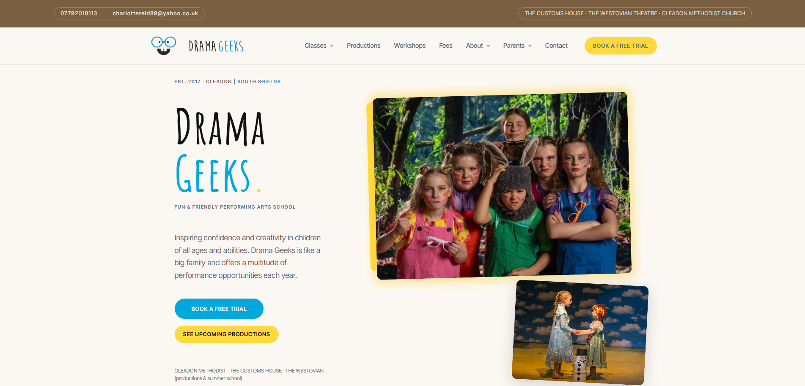

I have a psychology degree and three years in disability and mental health support. I got into development to build for businesses that do good, and to fill gaps I kept seeing in the fields I worked in.
Most developers haven't worked in the fields their software is meant to serve. I have, and that changes how I build.
My projects reflect that: task management built around how ADHD brains actually work, tools for support workers that address gaps I saw firsthand, websites built with care.
Selected client work
Live websites built for real businesses.
Drama Geeks - Client Website
A children's performing arts school in South Shields needed a website that felt warm and trustworthy to parents — not corporate and not cluttered. Full redesign and build in HTML, CSS and JavaScript, with class pages, show listings, fees, and a booking flow structured around how parents actually decide.

Healthcare Practitioner Website
A holistic massage practice where the audience is often anxious or in physical discomfort. The brief was calm over complexity. I built a quiet, accessible site that gets first-time clients from landing to booking with as little cognitive load as possible.

Other projects
Personal builds, design exploration, and academic work.
Behaviour-Focused Fitness App
UX & Interaction Design
Mobile and desktop fitness app design applying behavioural psychology to habit formation. Scaffolded goal-setting, progressive disclosure, and feedback loops drawn from how I built support plans at NZCL — meet people where they are, then scale up.

Tourism Management System
Group academic project
Team build of a visitor management system for a heritage park, supporting multiple stakeholder roles. I led the backend in C# and PostgreSQL, designing the data model and API layer that the frontend team consumed.

Runway
Habit & Recovery Tracker
A Flutter habit and recovery tracker designed for people working through addiction and behaviour change. Built with a full design system, SQLite local persistence, and patterns drawn from three years of frontline support work — scaffolded goals, low-friction check-ins, and progress framing that does not punish slips.

Focus
ADHD Task Manager
A task manager built around how ADHD brains actually plan — a NOW / SOON / LATER bucket system instead of due dates, with Firestore sync. Built to address gaps I kept hitting in mainstream productivity apps.

Development
- HTML, CSS, JavaScript
- React & Next.js
- Flutter & React Native
- Python
- C#
- Git & GitHub
- Agile/Scrum
Design & UX
- Figma
- Accessibility-first design
- User research
- Behavioural design
- Trauma-informed UX
Domain knowledge
- ADHD & neurodiversity
- Disability support (3+ years)
- Mental health services
- Youth services
- Psychology (BA)
Let's Talk
Currently available for small to medium web projects from December 2026.
If you are a small business, healthcare practitioner, or community organisation that needs a website that actually works for the people using it — I would like to hear from you.